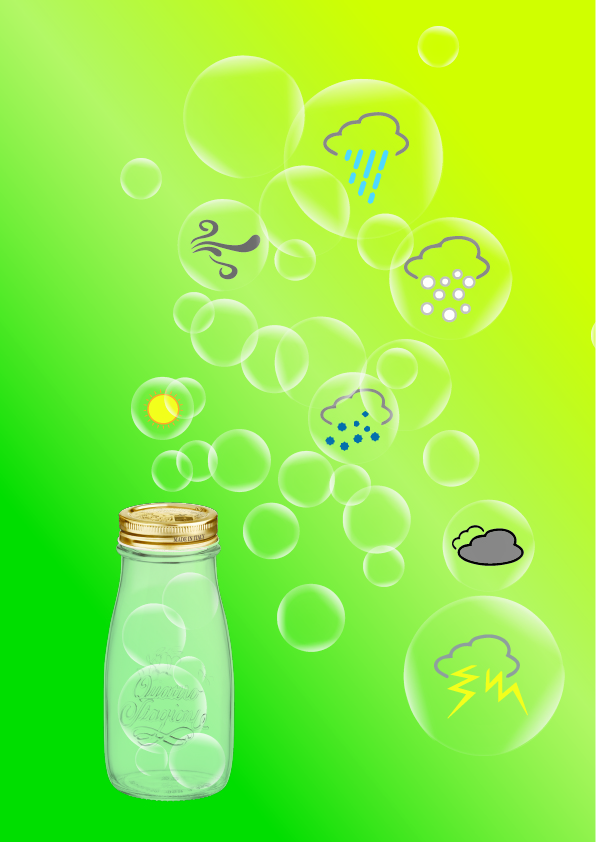
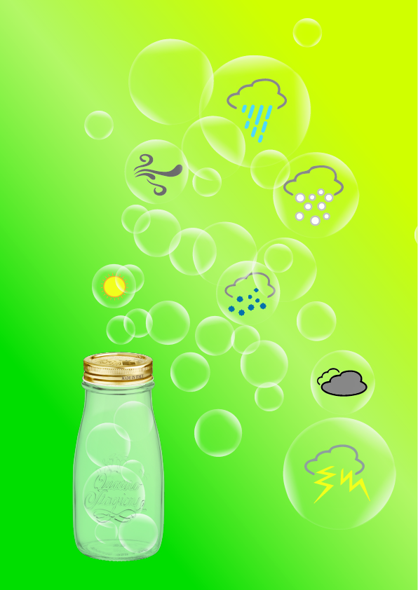
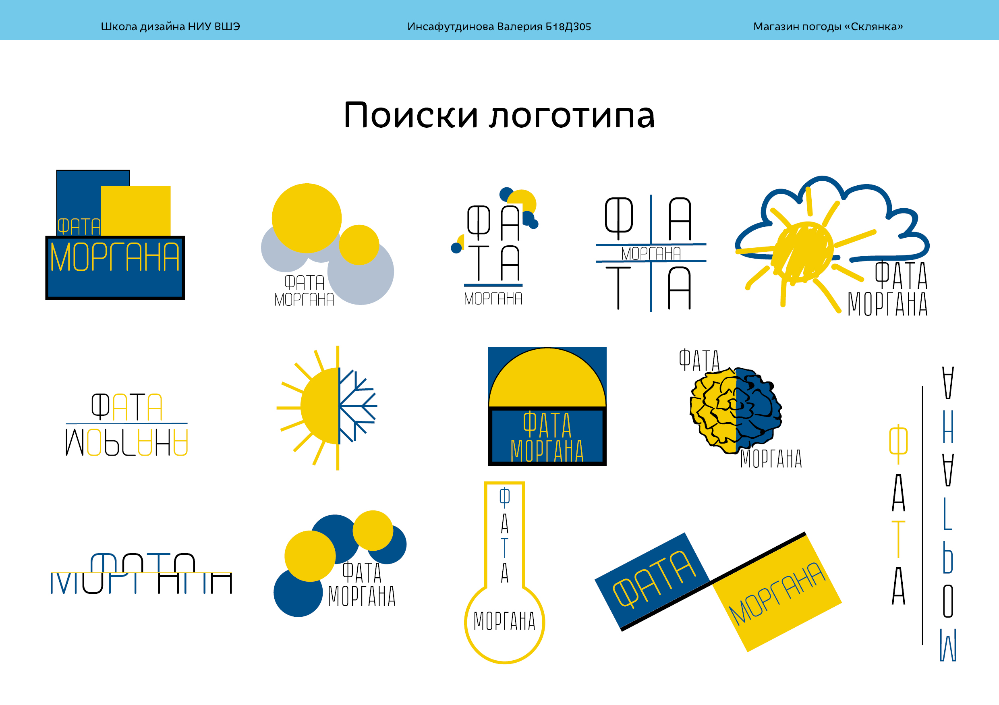
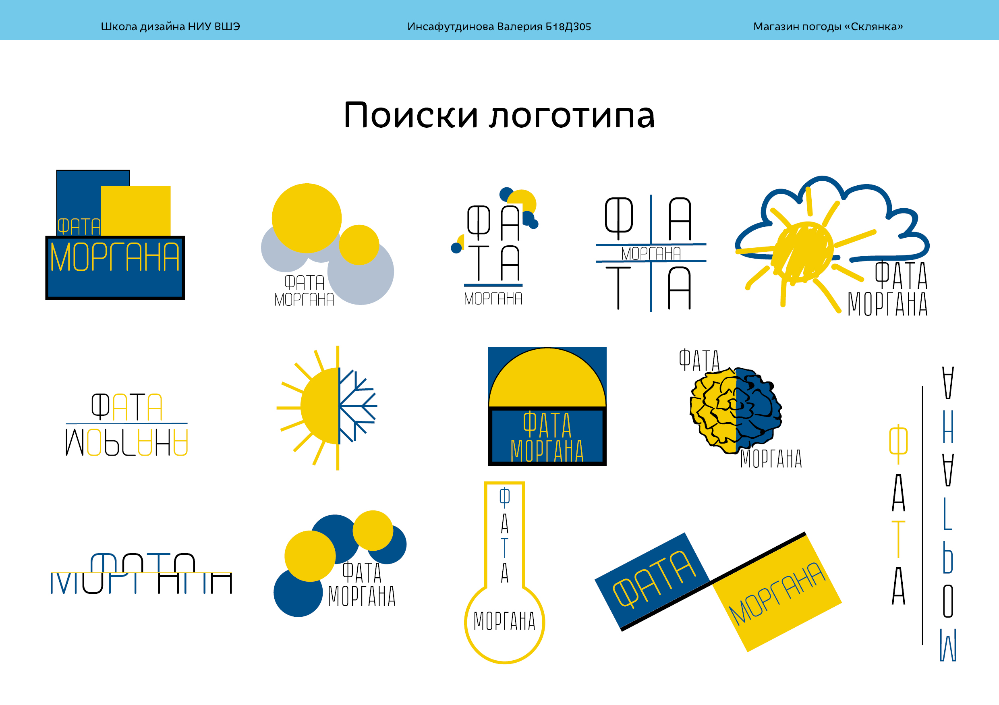

31 августа
Первый раз в школе дизайна.... ощущения неоднозначные, окружение производит впечатлие вечного ремонта, ну и ладно, это дизайн такой)
Студак не дали.... Ну обещают на первой учебной неделе, надеюсь, что оно так и будет)
Блин, почему на программировании так много девушек?! куда не пойдешь... в школе на профиле нас было большинство... и в группе сейчас из 28 человек 3 парня! я так не играю(
Познакомились с нашим ментором- второкурсницей, рассказала много интересных вещей про учебу. Общение подобного плана увеличивает жажду учиться, хотя у меня и так его не занимать)
Самая лучшая группа))

4 сентября
Последние пары БЖД и мы познакомились с нашими кураторами, увидели вообще всех, господи какие же они все классные!!! аааа!!
Даешь проактивный стиль жизни!! А наши кураторы самые-самые) вперет к вершинам!
Просле знакомства пошли с Захаром на сквер, ибо из аудитории нас выгнали( и на самом интересном месте меня забрал Милый, ну и ладно, все равно здорово провела время..)
Б18ДЗ05


5 сентября
Сегодня первые пары - не БЖД!!! Люблю историю искусств, но это история, а завтра уже будут профильные предметы)

13 сентября
Вот и первые работы, не считая морского боя) Мудборды... до сегодняшнего дня я вообще очень смутно понимала что это такойе, но что-то я сделала)
А тут будут все мои наработки до 25 числа)
Собственно да, чем я занимаюсь на технологиях дизайна...
Это флаги и их не приняли....(


25 сентября
Ну что может быть лучше верстки? прекрасное времяпрепровождение...) сидишь, кодишь никго не трогаешь, кто-то время от времени трогает тебя, но это не бесит, но порой окружающих бесит мое заторможенное общение, просто я вся там, в этих треугольных скобочках, линках и пэшках, извините, дорогие одногруппники, но когда я увлечена чем-то, то до меня очень сложно достучаться)
А социология довольно интересный предмет, мне по крайней мере пока нравится, может это пока, или не пока, но все равно у нас очень классные пары
О парах Технологий дизайна пока и говорить нечего…. изучаем люстру…. иногда проскальзывают интересные моменты, но нет…(
26 сентября
Английский английский…… вроде не самая глупая в группе, хотя в английском я дерево, но все равно всего не понимаю…( надо учить…. но учить так влом…. если в программировании ты видишь какой-то материальный результат, то язык…. это такая нематериальная штука…. что просто нет никакго стимула его учить…. я не чувствую самоудовлетворения, когда что-то получается…. это настолько легковесно, что прям не понимаешь что делать….
хотя мозг понимает, что надо учить, Лера, надо учить…. но Лера упирается…. и делает все что угодно, но не учит язык…
За то история искусств просто интересная, пусть и гуманитарная наука, но… это по крайней мере интересно…


Выходные….)
оххххххх
много было сделанно, просмотрен (пересмотренн) призрак оперы на фоне с креативным проетированием, зарисован скетч, а почему бы инет))
*он тут должен быть*
Логотипчики нарисованны, перенесены в люстру и вроде все хорошо, а еще даешь очередной вариант граф-образов…. странно, но теперь они какие-то…. не такие.. хотя смотрится прикольно)
01 октября
Вот и прошел первый месяц учебы, хотя не прошел- пролетел) безумно нравится) впереди маячит сессия… и это напрягает, ничего не готово, я не понимаю что делать с креативным проектированием, что будет на просмотре, Жени на этой неделе не будет…. плак- плак…
Футурология… выступаем с робототехникой…. без подготовки, без разделения информации… без презентации… класс… но хорошо, что я много читала, и моя способность с уверенной миной и !Без заикания! втирать какую-то дичь очень помогла) Надеюсь хоть какой-то плюсик к накопу упал)
На Арт-преактике познакомились с Trello, классная платформа, с первого взгляда ничего особоенного, но надо начать ей пользоваться и скорее всего я пойму, что в нем такого прекрасного, интуитивно я понимаю, что это круто, но как обычно не могу придумать практического применния…. да и поперлась я такая в дизайн….
А на Креативном проетирование опять было очень скучненько…. не дело всю пару проверять работы…. еще и без Жени… за то услышала мнение со стороны… на флагах бактерии, но и пусть, переделаю, не первый раз)


08 октября
Футурология- как обычно: пришли, поговорили, послушали, ушли, хотя лично я узнала интересные вещи по поиску информации для пар, да и вообще по поиску важной информации, а не по всякому шлаку.
Люблю слушать о правильном распеределении времени, как нао упорядочивать дела, но никгда этому не следую, ибо лень, хотя последние дни я все-таки этого придерживаюсь, хоть и только на выходных. Полезная в этом смысле пара была у Захара, теперь можно поробовать вести свои списки не на листочке, а перейти в трелло, стоить попробовать- попытка- не пытка) Еще к этой паре у меня появился первый макет этого дневника..)
И наконец креативное проектирование- у меня наконец-то приняли флаги!!!! юху!!! это действительно очень круто))
Еще появился путь для графический образов, и как сказала Женя мы хорошие котики, и что все у нас хорошо) надеюсь, что на просмотре у нас тоже будет все хорошо)
Какова вероятность, что вы сейчас видете этот макет...?)
По-моему процентов 10))
 

10 октября
Начинает виднеться сессия, работы, проверочные - красота. Мой список дел на выходные дополняется новыми предметами, и это классно)) наверное я мазохистка..) ну и пусть, главное кайфовать от того, чем ты занимаешься)
Я кайфую от жизни в общаге, кайфую от пар, только вот дорога не каефная, но у меня все-таки есть метод по порьбе и этим)
Да, учиться запарно, но пока мне эта запара нравится)

11 октября
Сегодня весь день была на золотой пчеле, невероятные впечатления) великолепные плакаты, некоторые просто прогружают в себя и потом не хотят отпускать тебя..
Также, естественно посетила лекции, получила достаточно хорошую языковую практику, так как одна из них была на английском..) и там мне вручили слоника)
А вечером все рано поехала в ШД ибо работать, а в общаге это не всегда получается продуктивно, а тут я заряжаюсь нужной энергией)
Помимо плакатов была выставка промышленного дизайна и вот такие человечки)


17 октября
Ура работы, ура проверка знаний) я странная….. но блин.. кайф)) посмотрим что я получу по английскому, я правда старалась) А вот по истории не знаю…. хочу 10 и понимаю, что впринципе могу ее получить, если постараюсь, но чет у меня такое предчуствие, что определенно что-то пойдет не так и будет у меня не выше 8….(
Живи так, чтобы знакомым стало скучно, когда ты умрешь.

18 октября
Последние пары в первом модуле, прекрасно, первая сессия) какая-то эйфория…. но блин как же это круто!!!
Сдалась сегодня по свем работам по креативному проектированию, и все время до славянки сидела и делала презентацию, получилось неплохо, ну мне покрайней мере нравится)) посмотрим, что скажет Женя, дедлайн по ним аж в субботу, а пока буду заниматься этим дневником)
 

Последние выходные первого модуля
Прекрасные и размеренные, у одногруппников стресс, а я какая-то слишком спокойная…. и меня это немного напрягает… хотя такое мое отношение к окружающему меня миру помогает не распыляться по мелочам, и без этого я черезчур эмоциональная (хотя может ли быть девушка “черезчур эмоциональной”...) Довольна ли я собой по завершении 1 модуля, не знаю… главное, что заканчивается он без стресса и сильного напряжения, это же только начало, все самое сложное впереди)
Код, код, код ~♡